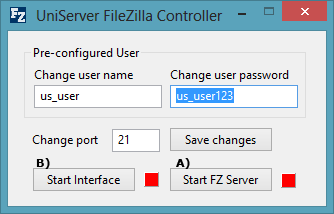
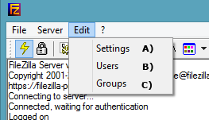
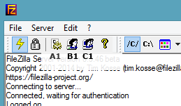
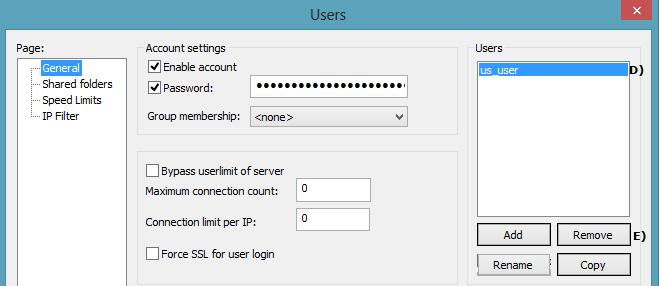
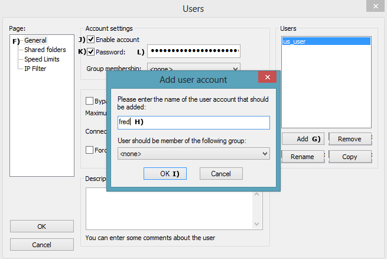
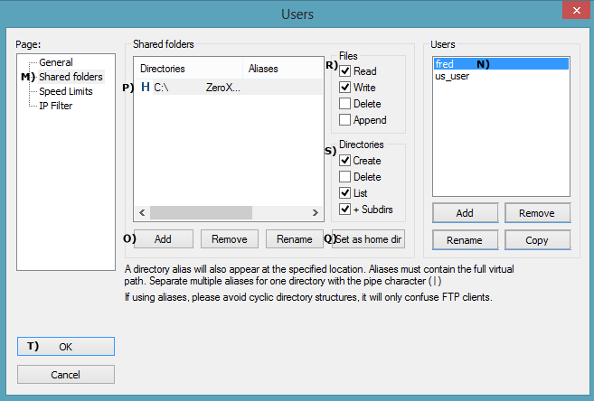

|
|
FileZilla basic configuration |
This page covers creating, deleting and modifying FileZilla Server user accounts. Although written specifically for Uniform Server, the same principles apply equally to a standard installation of FileZilla.
Run FileZilla - Portable mode
To configure The FileZilla server, always run the server in portable mode. If the server is currently running as a service, stop and uninstall the FileZilla service as follows:
Stop and uninstall service
|
Start Portable FileZilla and administration Interface
|
 |
FileZilla Admin Interface Sections
The admin interface provides access to three server sections: setting, users and groups. Two methods are available to select these; either via the dropdown menu or the top row of icons.
|
 |
|
 |
Delete a User
|
If you wish, you can delete the pre-configured user. The following shows how to delete any user.
Note: Although you can delete the pre-configured user, it is recommended to leave it. Once the password has been changed, it is safe to use. |
 |
Add a User
|
To add a new user, we first create a new user and set a password. Create a user:
|
 | |
|
After creating a user, you must assign a home folder (directory) to that user. Assign a folder to user:
|
 |
Quick Test
Assuming you are running the server on your local machine, you can quickly test the account.
Type the following into your browser:
- ftp://localhost/ - A pop-up is displayed; enter name fred and password you entered in step (L) above.
- A page is displayed showing files and folders contained in your shared folder (P).
Local network access
Anyone on your local network can access the ftp server by typing ftp://your_ip_address into their browser; they will be challenged for a username and password.
To find your IP address, use a command prompt:
- Open Run command box by pressing Windows logo + R keys.
- In the command window, type ipconfig /all
- Look for your IP address. If you are using a wireless network, the address will be similar to this: 192.168.1.6.
- While in the command window, look for Host Name, the name of your PC (UniPC, for example). Note that sometimes, this is not set-up.
A user can use either HostName or IP address to access your FTP server.
For example, a user on your network could type ftp://192.168.1.6/ or ftp://UniPC/
Neither of the above is very easy on the eye. An alternative is to get each user to add a memorable name to their hosts file.
For example, under localhost, add a line as shown below:
127.0.0.1 localhost
192.168.1.6 my_ftp_server
They must substitute 192.168.1.6 for their IP address and replace my_ftp_server with a memorable name.
Internet access
To access your FTP server from the Internet, a user would type the following into a browser:
ftp://your_domain_name/; alternatively, ftp://your_external_ip_address
On-line help:
Testing an FTP server for on-line access can be problematic. However, there are two useful on-line services that can help:
- To find your external IP address, use: Whatsmyip
- To test FTP access, use: https://ftptest.net/. It's free for anyone to use.
◦ Note: As a precaution, change your FTP password after it's been tested on-line.
Ports:
If you have a direct Internet connection, there should be no problems with access.
However, if you are using a router, you need to forward ports 20 and 21. Every router is different. Hence, pay a visit to Port Forward for detailed instructions.
Problems
You may be unlucky and have a service provider that blocks the common FTP ports. In this event, try changing the ports. Do not allow your firewall to block Internet access; otherwise, you will need to manually enable access.
FTP Clients
Using a browser allows for quick testing. However, an FTP client like FileZilla Client Portable offers more flexibility.
Please note that The Uniform Server developers have no relation or affiliation with this site. Other choices likely are available.